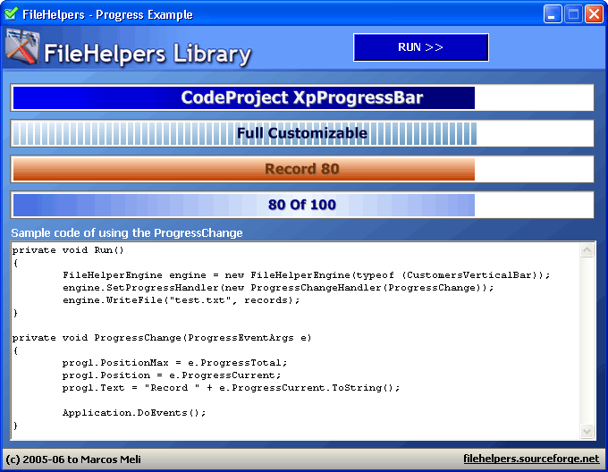

Progress Notification
You can get notified about the progress of the operations
of the engines and DataLinks.
This can be used in all cases. For example, when you write a file,
the engine knows the total records to be written and the record
currently being processed. This information is used to provide an
accurate notification. However, if you read a file and the engine only
knows the current record and not the total record then the total count
will be -1.
The usage is simple, you must to instantiate the engine and before
any operation, you must call the SetProgressHandler:
and in your Progress change method:
Check the demo application for an example that looks like:

In the distribution you can find My XpProgressBar to use with
the FileHelpers library.
{$FOOTER$}